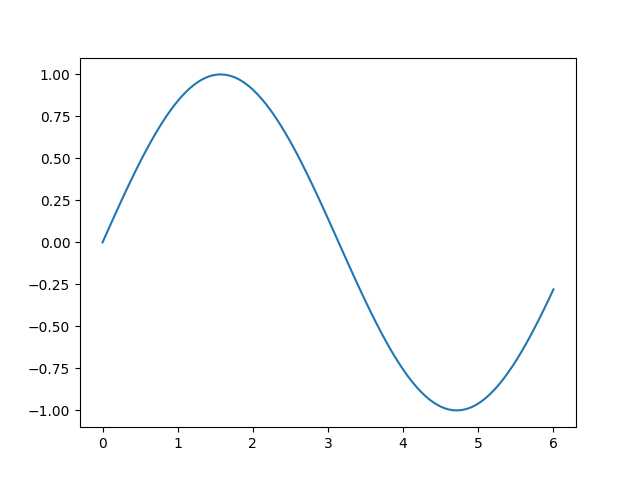

title: Example report date: Thursday 29. November 2018
This is example report, showing how to include text, tables, figures and inline values.
\delta = 1$ (not really related to the pyreport library)The following table is generated using tabulate library. I'm using the html format as the github format desn't work in gitlab, and html works in both.
| 0.592862 | 0.562464 | 0.303685 | 0.00297459 | 0.768117 |
| 0.744525 | 0.118402 | 0.666833 | 0.756358 | 0.886459 |
| 0.808759 | 0.7703 | 0.0964539 | 0.66587 | 0.674644 |
| 0.633492 | 0.338505 | 0.258428 | 0.893039 | 0.377222 |
| 0.67076 | 0.774994 | 0.784219 | 0.297287 | 0.731343 |
The following figure is produced by matplotlib, using the Report.add_path('fig/fig.png')
the figure is save to apropriate location.

Don't wat to force you, but it would be nice to mention the pyreport library, somewhere in the report.
This report was generated using pyreport.